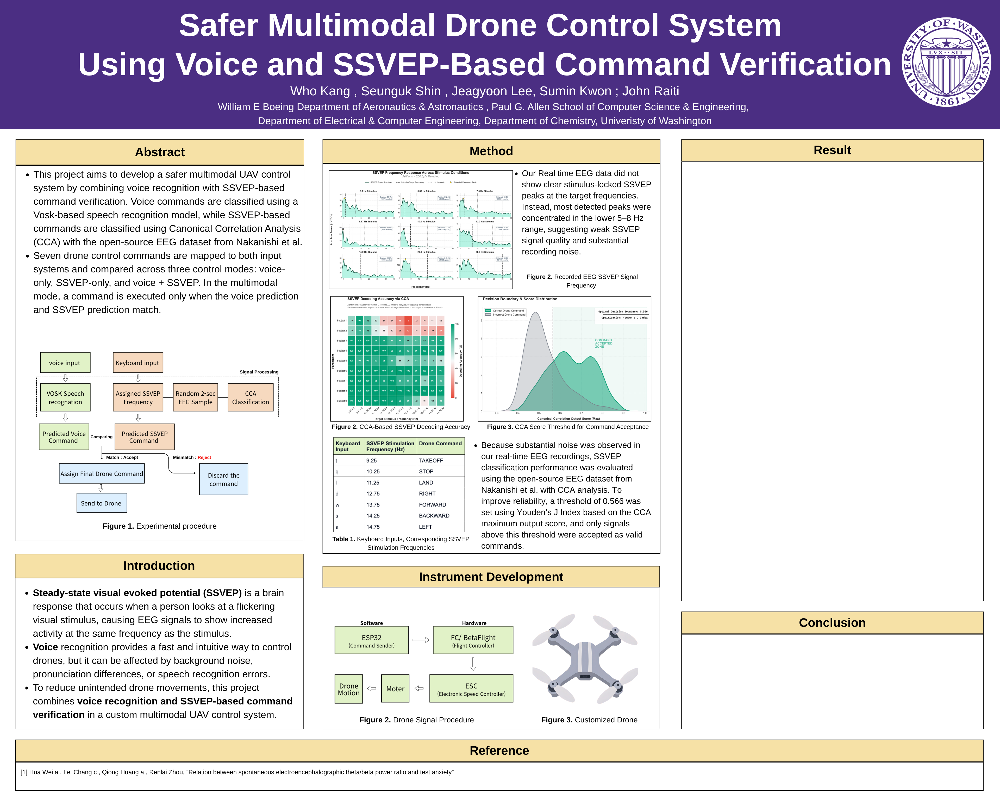

Multimodal UAV with Voice Sensing and SSVEP
A custom UAV testbed for hands-free drone control, integrating voice recognition and SSVEP-based command verification through ESP32 routing, Betaflight flight-controller configuration, and bench-level latency testing across three control modes.
Overview
A custom UAV testbed for hands-free drone control, validated across three control modes with 98.8% command accuracy and a mean latency of 2.08 seconds. Presented at the UW Undergraduate Symposium by a four person interdisciplinary team (one Aeronautics & Astronautics student (me), one ECE student, one CS student, and one Biochemistry student).
The goal was to build a safer multimodal UAV control system by combining voice recognition with SSVEP-based command verification, so that a drone command would only execute when both input systems agreed. I was the primary contributor for UAV hardware, drone integration, flight controller setup, the hardware command pipeline, safety and testing procedures, and a significant portion of the software integration work.
Problem & Approach
Voice recognition offers fast and intuitive drone control, but it is vulnerable to background noise, pronunciation variation, and misclassification. Relying on a single input channel increases the risk of unintended command execution. To reduce this risk, the project combined voice recognition with SSVEP-based verification as a second confirmation layer. SSVEP, or steady-state visual evoked potential, is a brain response that occurs when a person focuses on a flickering visual stimulus. The EEG signal at the stimulus frequency increases measurably, which allows classification of the intended command based on which frequency the user is attending to. In the multimodal mode, a drone command is only executed when the voice prediction and the SSVEP prediction match. If the two predictions disagree, the command is rejected. The system compares three control modes: voice only, SSVEP only, and voice combined with SSVEP. Nine commands are mapped across both input systems: TAKEOFF, STOP, LAND, RIGHT, FORWARD, BACKWARD, LEFT, UP, and DOWN.
System Architecture
Voice commands are classified using a Vosk-based speech recognition model running on a host machine. SSVEP commands are classified using Canonical Correlation Analysis, or CCA, evaluated against a set of target stimulus frequencies ranging from 9.25 Hz to 14.75 Hz. Each of the seven drone commands is mapped to a specific SSVEP frequency. The CCA output confidence score is thresholded at 0.566, determined using Youden's J Index, to filter out low-confidence classifications. In multimodal mode, the command routing layer compares the voice prediction and the SSVEP prediction before forwarding any command to the flight controller. On the hardware side, the command pipeline routes through an ESP32 to the DolphinRC F405 V3 flight controller running Betaflight. The flight controller interprets incoming commands and drives motor outputs accordingly. Because real-time EEG acquisition produced noisy signals without clear stimulus-locked peaks at the target frequencies, SSVEP commands during hardware testing were simulated using keyboard inputs mapped to the seven target frequencies. This decision is discussed further in the Limitations section.
My Role
Within the four-person team, I was responsible for nearly all UAV hardware work and contributed significantly to the software pipeline as well. My specific contributions included:
- Drone hardware assembly, soldering, and wiring.
- Part selection and propulsion calculations.
- DolphinRC F405 V3 flight controller configuration and Betaflight setup including receiver configuration, motor mapping, mode configuration, and safety behavior.
- Betaflight setup including receiver configuration, motor mapping, mode configuration, and safety behavior.
- ESP32 command routing and embedded interface setup.
- Command pipeline integration connecting the processing layer to the flight controller
- Latency measurement pipeline design and data collection across all three control modes
- Baseline RC flight demonstration to verify airframe, motor, and flight controller readiness
Evidence
The following artifacts support this project:
- Project code repository with software integration, command routing, and latency measurement scripts.
- Latency measurement data comparing voice-only, SSVEP-only, and multimodal control modes.
- Baseline RC flight demonstration video showing successful takeoff, hover, directional control, and landing using the integrated system.
- Draft UW Undergraduate Symposium poster used here as a temporary project artifact.

Outcome
Across 270 trials spanning three control modes, the multimodal mode achieved 98.8% command accuracy and a mean latency of 2.08s, which was lower than both voice only (2.16s) and EEG only (2.62s). The EEG only mode showed higher latency variance and a lower accuracy of 95.4%, supporting the case for dual-channel verification. In the multimodal mode, 7 out of 90 trials were rejected due to channel disagreement or missing input, demonstrating that the safety logic actively filtered uncertain commands rather than executing them blindly.


Limitations
Several important limitations should be stated clearly. Real-time EEG acquisition did not produce clean SSVEP signals. Recorded peaks were concentrated in the 5 to 8 Hz range rather than at the target stimulus frequencies, indicating significant noise and weak stimulus-locked responses. As a result, SSVEP classification performance was evaluated using the open-source EEG dataset from Nakanishi et al. rather than live subject data. Manual RC override was explored as a safety fallback but was not preserved in the final test configuration due to UART integration errors. The drone was not flown under live multimodal voice and SSVEP control. The baseline flight demonstration was completed under standard RC control only.


Next Step
Immediate next steps include resolving the UART integration issue to restore a reliable manual RC override path, and improving real-time EEG signal quality through better electrode placement and noise shielding. Longer-term, the goal is to validate the full multimodal pipeline under actual flight conditions in a controlled outdoor environment, using live SSVEP classification rather than keyboard-simulated inputs.